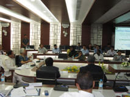

In 2010, Dr. Isher Judge Ahluwalia, the chairperson of Indian Council for Research on International Economic Relations (ICRIER) and former chairperson of the high-powered expert committee on urban infrastructure services, conducted many studies focusing on urbanization in India in the International Economic Research. As a continuum of the research conducted, Dr. Isher is writing many columns in the Indian Express on urbanization with a special focus on the environment issues, its contributions and destructions in the urbanization process. Dr. Isher Judge Ahluwalia and Ranesh Nair typically use their column to tell the story of successful policy intervention in an Indian city, offering lessons for cities facing similar challenges.
As part of its programme on Urbanisation supported by Ministry of Urban Development, Government of India, Indian Council for Research on International Economic Relations (ICRIER) conducted a workshop on ‘Challenges of Urbanisation’ with focus on Solid Waste Management and specific issues facing the eight North-eastern states including Assam, Arunachal Pradesh, Mizoram, Nagaland and Tripura in Guwahati on April 29 and 30, 2013. It is focused on preparing India for the urban challenges for the 21st century. The Chariman of Pammal Municipality, Mr. C.V. Illangovan, BA.B.L., and the chairperson of Exnora Green Pammal, Ms. Mangalam Balasubramanian were invited by Dr. Isher Judge Ahluwalia to present and showcase the exemplary efforts carried out at Pammal in solid waste management highlighting the challenges and best practices during the capacity building programme to the delegates.
|
The honorable chief minister Mr. Tarun Gogi inaugurated the capacity building workshop on the 29th April 2013 at Assam Administrative College at Gauhati. During the inaugural part of the workshop, Ms. Mangalam Balasubramanian illustrated the various activities carried out at Pammal municipality in implementing the integrated solid waste management programme. The chief minister of Assam congratulated the team – the chairman, Mr. C.V. Illangovan, the councilor of 14th ward, Mr. Dhandapani and the Sanitary Inspector Mr. Prabhakaran and the documentation specialist Ms. Sudha Mercy Rachel. The chief minister, the delegates and the govt officials of the state felt that the pammal example of the integrated solid waste management and the decentralized approach with maximum resource recovery is the best way to solve the urbanization and solid waste management issues in the north eastern states. ICRIER appreciated Ms. Mangalam’s contribution and active participation that stimulated a lively discussion and informed that the insights and issues shared by her will be taken up by them in their research and other capacity building initiatives. As a response to this, the govt officials of the state of Mizoram will be visiting the Pammal municipality to get hands-on experience of the implementation of the solid waste management programme at Pammal. |
|
|  |


{kind=link}
{kind=link}